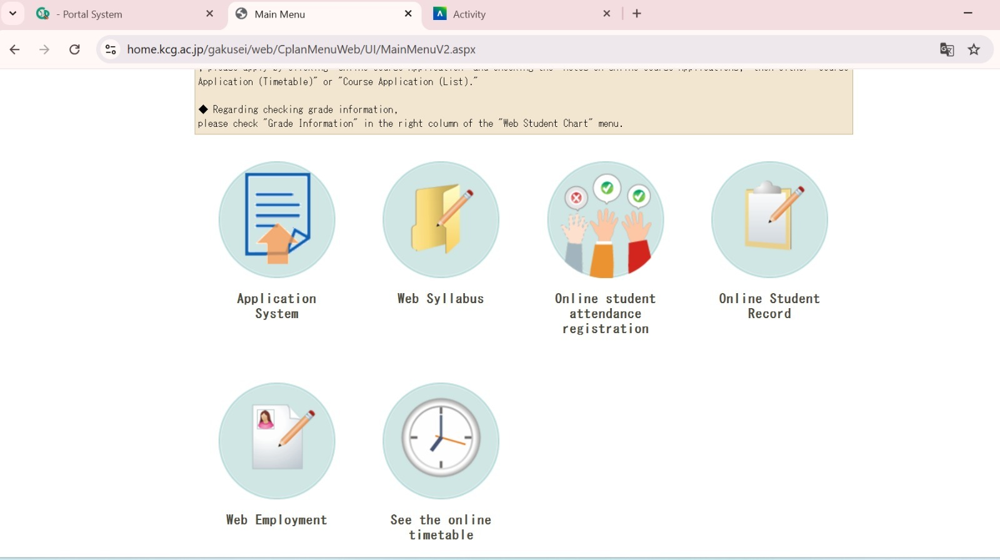
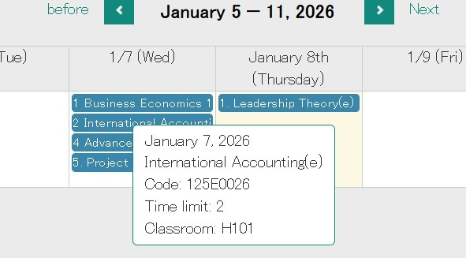
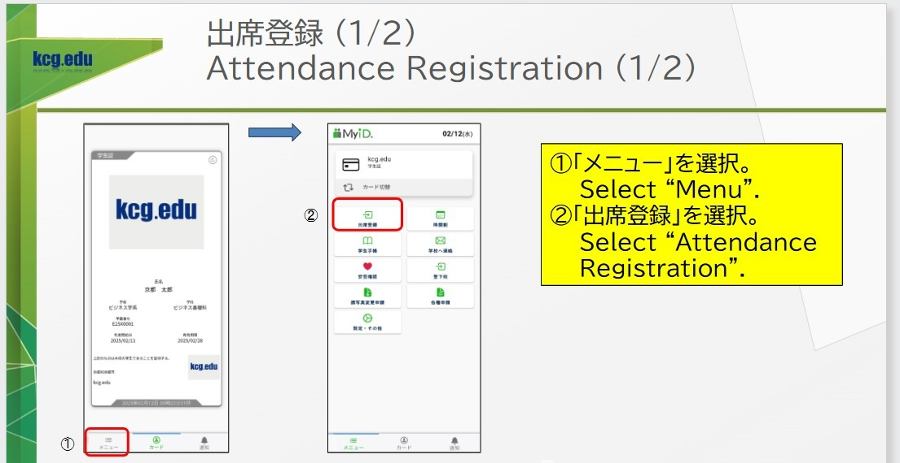
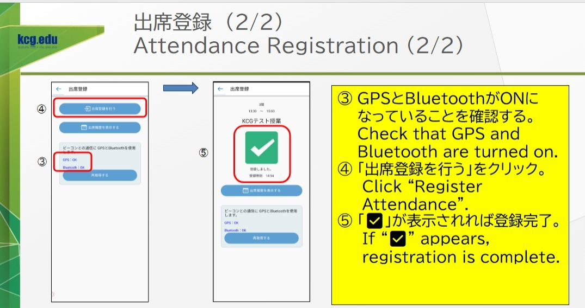
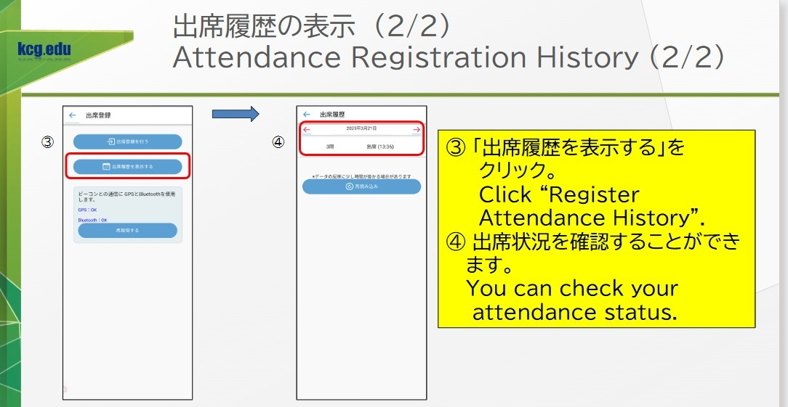
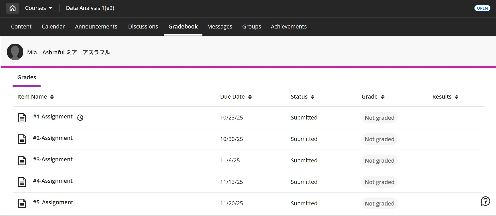
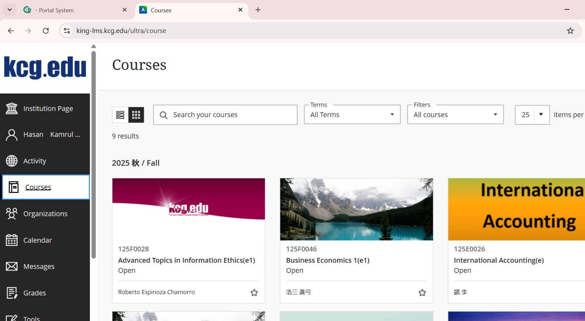
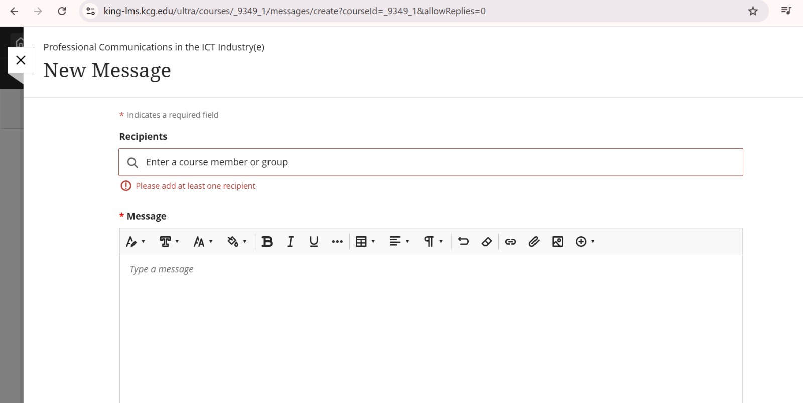

Academic systems and expectations in Japan may differ from those in other countries. This section explains how to succeed academically at KCGI.
Attendance and participation are important. Attendance is recorded through Campus Plan or the My ID app for face-to-face classes.
    Assignments are managed through King LMS. Students must submit work on time and follow academic honesty rules.
Students can communicate with instructors through King LMS messaging. Polite and clear communication is essential.
 